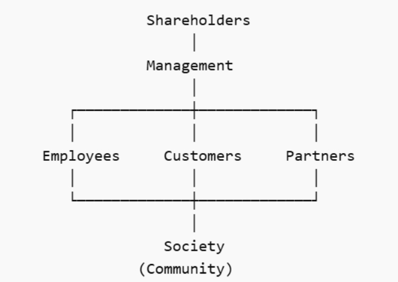
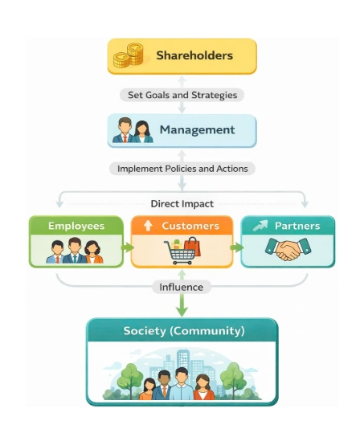

1. Stakeholder Theory là gì?
Trong nhiều thập kỷ trước, tư duy quản trị doanh nghiệp chủ yếu dựa trên Shareholder Theory, tiêu biểu là quan điểm của nhà kinh tế học Milton Friedman cho rằng mục tiêu quan trọng nhất của doanh nghiệp là tối đa hóa lợi nhuận cho cổ đông. Theo cách tiếp cận này, trách nhiệm của doanh nghiệp chủ yếu mang tính kinh tế, trong khi các vấn đề xã hội được xem là trách nhiệm của chính phủ hoặc các tổ chức xã hội.
Tuy nhiên, sự phát triển của xã hội hiện đại đã làm thay đổi cách nhìn nhận về vai trò của doanh nghiệp. Các vấn đề như khủng hoảng môi trường, xung đột lao động hay quyền lợi người tiêu dùng cho thấy doanh nghiệp không thể tồn tại tách rời khỏi xã hội. Từ bối cảnh đó, Stakeholder Theory được phát triển bởi R. Edward Freeman trong tác phẩm Strategic Management: A Stakeholder Approach (1984).
Theo lý thuyết này, doanh nghiệp không chỉ phục vụ lợi ích của cổ đông mà là một mạng lưới các mối quan hệ giữa nhiều nhóm stakeholders khác nhau, bao gồm nhân viên, khách hàng, nhà cung cấp, cộng đồng, chính phủ và xã hội. Những nhóm này vừa ảnh hưởng đến hoạt động của doanh nghiệp vừa chịu tác động từ các quyết định của doanh nghiệp. Vì vậy, nhiệm vụ của nhà quản trị là tạo ra giá trị cho toàn bộ hệ sinh thái stakeholder thay vì chỉ tối đa hóa lợi ích cho một nhóm duy nhất.
Từ góc nhìn CSR, điều này cho thấy trách nhiệm xã hội của doanh nghiệp không chỉ là hoạt động thiện nguyện mà là quá trình quản trị mối quan hệ lợi ích giữa các nhóm liên quan.
2. Mối quan hệ giữa Grab và đối tác tài xế
Một ví dụ điển hình cho mạng lưới stakeholder trong nền kinh tế số là Grab Holdings. Hệ sinh thái của Grab bao gồm nhiều nhóm liên quan như khách hàng, đối tác tài xế, nhà đầu tư, chính phủ và cộng đồng xã hội. Trong đó, đối tác tài xế đóng vai trò trung tâm trong việc vận hành dịch vụ, vì họ trực tiếp cung cấp dịch vụ vận chuyển và giao hàng cho khách hàng.
Tuy nhiên, tài xế trong mô hình nền tảng thường được xem là lao động tự do (gig workers), một nhóm stakeholder tương đối dễ bị tổn thương vì họ không có đầy đủ các chế độ bảo vệ như lao động chính thức. Chính vì vậy, trong các giai đoạn biến động kinh tế – đặc biệt là thời kỳ đại dịch COVID-19 – Grab đã triển khai nhiều chính sách nhằm hỗ trợ đối tác tài xế.
Các sáng kiến này bao gồm quỹ hỗ trợ tài chính khẩn cấp cho tài xế bị ảnh hưởng bởi dịch bệnh, các chương trình bảo hiểm tai nạn và bảo hiểm sức khỏe, cũng như các chương trình đào tạo và hỗ trợ nâng cao thu nhập. Ngoài ra, Grab cũng mở rộng các dịch vụ như giao hàng và giao thực phẩm để tạo thêm cơ hội thu nhập cho tài xế khi nhu cầu di chuyển giảm mạnh.
Từ góc độ Stakeholder Theory, những chính sách này cho thấy Grab nhận thức rằng sự ổn định của hệ sinh thái nền tảng phụ thuộc vào sự ổn định của các stakeholder trong mạng lưới, đặc biệt là nhóm tài xế.
3. Mâu thuẫn lợi ích giữa các Stakeholders
Mặc dù Stakeholder Theory nhấn mạnh việc tạo giá trị cho tất cả các bên liên quan, trên thực tế xung đột lợi ích giữa các stakeholder vẫn thường xuyên xảy ra.
Trong trường hợp của Grab, một mâu thuẫn phổ biến là xung đột giữa lợi ích của cổ đông và lợi ích của tài xế. Cổ đông thường kỳ vọng doanh nghiệp tối ưu chi phí và tăng lợi nhuận. Điều này có thể dẫn đến các chính sách như điều chỉnh tỷ lệ chiết khấu hoặc thay đổi thuật toán phân chia cuốc xe nhằm nâng cao hiệu quả kinh doanh.
Tuy nhiên, những thay đổi này đôi khi làm giảm thu nhập hoặc khiến tài xế cảm thấy quyền lợi của họ bị ảnh hưởng. Khi đó, doanh nghiệp phải đối mặt với thách thức lớn: làm thế nào để duy trì hiệu quả kinh doanh trong khi vẫn đảm bảo sự công bằng đối với các stakeholder khác.
4. Bài học đạo đức kinh doanh
Khi lợi ích cổ đông và lợi ích cộng đồng xung đột, câu hỏi quan trọng đặt ra là: đạo đức kinh doanh nên đứng ở đâu?
Theo quan điểm CSR, doanh nghiệp cần nhìn nhận stakeholder không chỉ như nguồn lực kinh tế mà còn là những chủ thể xã hội có quyền lợi chính đáng. Điều này đặc biệt quan trọng đối với các nhóm yếu thế như lao động tự do trong nền kinh tế nền tảng.
Nếu doanh nghiệp chỉ tập trung tối đa hóa lợi nhuận cho cổ đông mà bỏ qua quyền lợi của các stakeholder khác, họ có thể đạt lợi ích ngắn hạn nhưng sẽ đối mặt với rủi ro về uy tín, xung đột xã hội và mất tính hợp pháp trong dài hạn. Ngược lại, khi doanh nghiệp quan tâm đến lợi ích của nhiều stakeholder, họ có thể xây dựng niềm tin xã hội và lợi thế cạnh tranh bền vững.
5. Phản tư và bài học
Qua việc tìm hiểu Stakeholder Theory và phân tích trường hợp của Grab, tôi nhận ra rằng CSR thực chất là nghệ thuật quản trị mạng lưới lợi ích giữa các stakeholder. Doanh nghiệp không tồn tại độc lập mà luôn nằm trong một hệ sinh thái xã hội rộng lớn.
Bài học quan trọng rút ra là doanh nghiệp cần chuyển dịch tư duy từ "quản trị vì cổ đông" sang "quản trị vì stakeholder". Điều này không có nghĩa là bỏ qua lợi nhuận mà là tìm cách tạo ra giá trị kinh tế đồng thời với giá trị xã hội. Chỉ khi các stakeholder cùng được hưởng lợi, doanh nghiệp mới có thể phát triển bền vững trong dài hạn.
6. Sơ đồ Cascade Stakeholder

